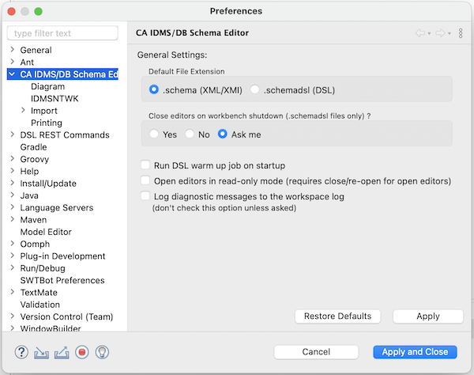
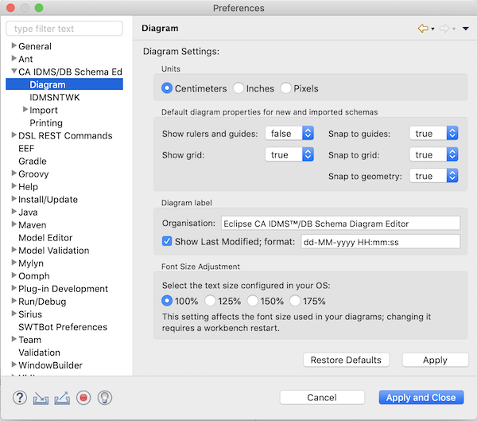
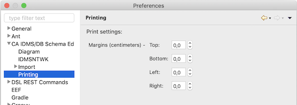

Preferences Dialog
Eclipse has a preferences dialog where you can configure the installed plug-ins. Opening the preferences dialog
is different on Windows when compared with the Mac :
- Windows : via the Windows/Preferences menu item
- macOS : via the Eclipse/Preferences... menu item
The diagram editor has a couple of preference pages allowing you to configure some of its aspects.

Most of the options should be fairly easy to understand but some may use some explanation.
Although you can set a default file extension, you choose the actual file extension when creating or importing a
diagram, so it is perfectly fine to have diagrams in both formats in your workspace. Because .schemadsl files take more
time to load than .schema files, you have the choice to close all of the open .schemadsl files when stopping Eclipse.
This is to avoid excessive Eclipse startup times because of (re)loading .schemadsl files.

It may be necessary to adjust the default font size used by the diagram editor. For Windows you can align the font
size percentage with the one set for your operating system; for the Mac I suggest you try some percentages until you
are satisfied with the result. Don't forget to restart your Eclipse workbench when changing the percentage.
![[preferences IDMSNTWK]](../../images/preferences_IDMSNTWK.png)
You can import dictionary and catalog related IDMS manuals if you need to work with the IDMSNTWK schema; you will
then have the documentation for each dictionary record (or catalog table) available in the Properties view. In the
preferences dialog you select the manual pair to use (you can maintain several versions should you need this). Please
refer to the page dedicated to the IDMSNTWK schema for more information about
this topic.
![[preferences import]](../../images/preferences_import.png)
Database procedures that you use for compression can be managed in the preferences dialog. In doing so, the
storage modes for record types can be determined automatically when importing diagrams.
Please refer to the pages for the JDBC driver and
dictionaries to configure the diagram editor to connect to your mainframe so it can
create diagrams for your existing schemas using SQL Web Connect (or the SQL Option) and IDMS Server.

It is probably necessary to set print margins; please refer to the Printing section for this. Print
margins are managed globally and thus not on a diagram per diagram basis.